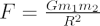

“Big” G is Newton’s gravitational constant and gives the constant of proportionality in Newton’s Universal law of gravitation which is the basis of our understanding of non-relativistic gravity. The gravitational force F between two bodies of mass m1 and m2 at a distance R is:

In SI units, G has the value 6.67 × 10-11 Newtons kg-2 m2.
The direction of the force is in a straight line between the two bodies and is attractive.
Thus, an apple falls from a tree because it feels the gravitational force of the Earth and is therefore subject to “gravity”. The acceleration g=F/m1 due to gravity on the Earth can be calculated by substituting the mass and radii of the Earth into the above equation and hence g= 9.81 m s-2.